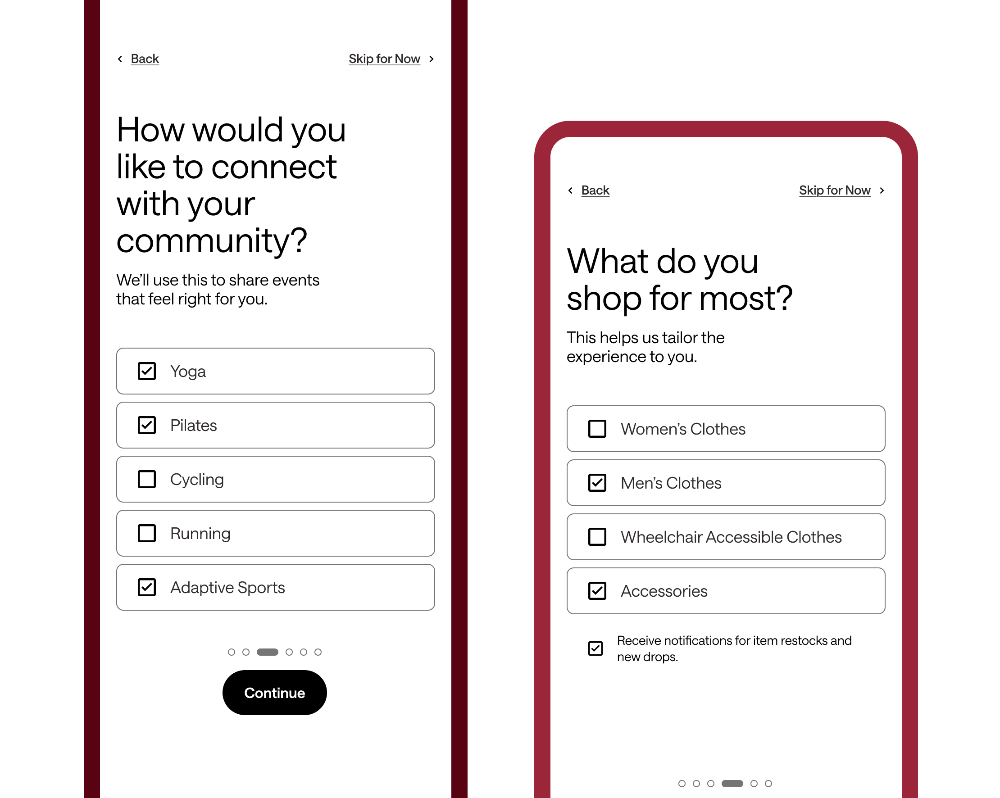
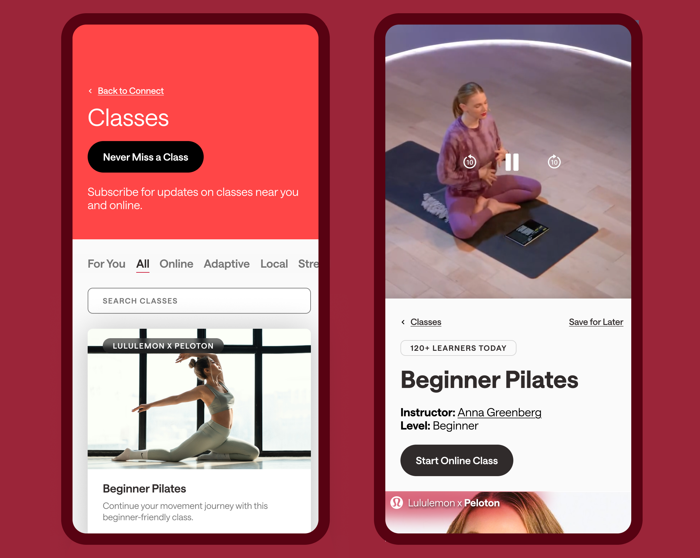
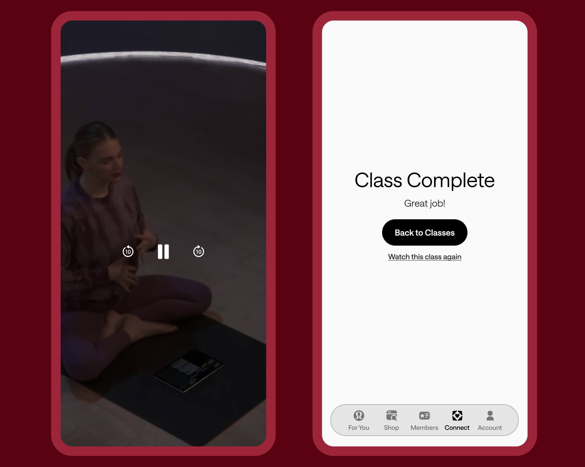
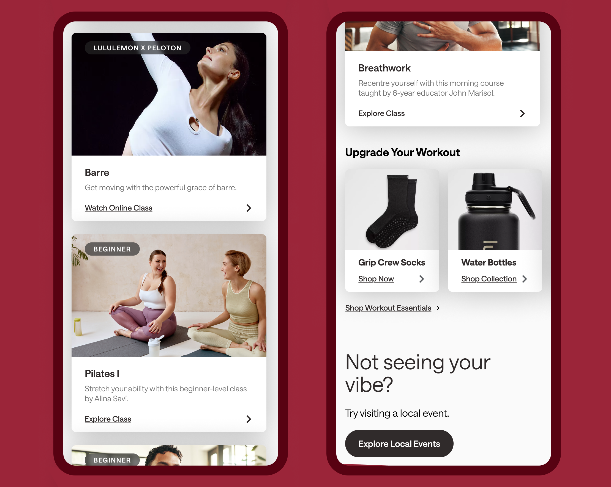
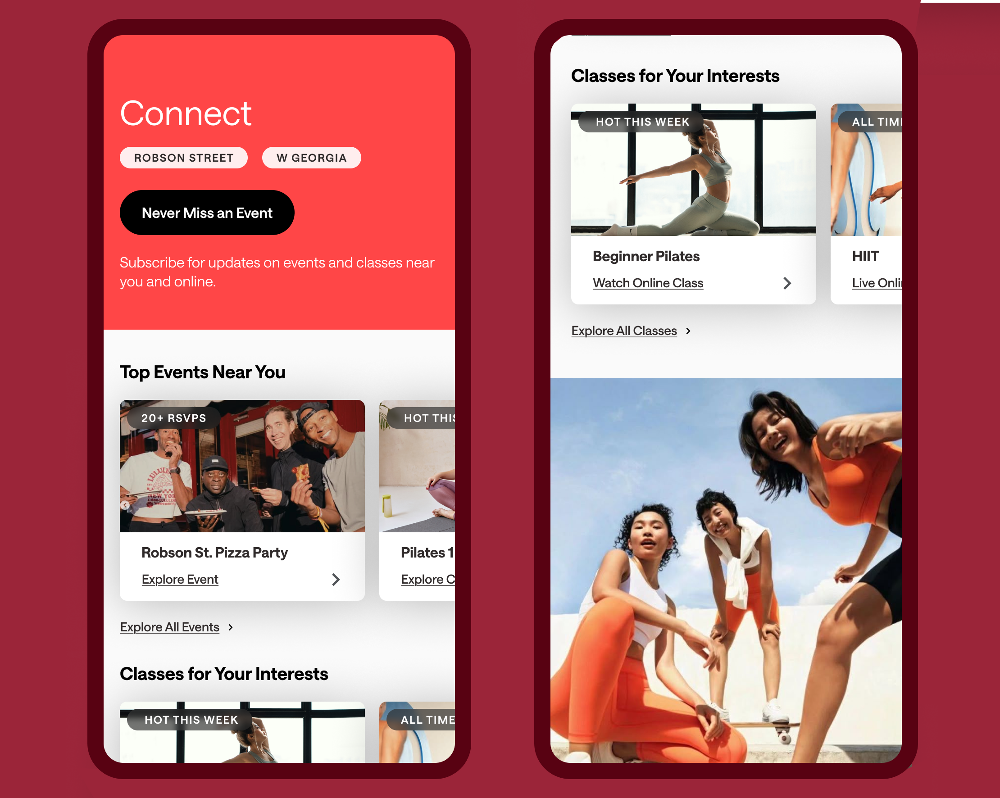
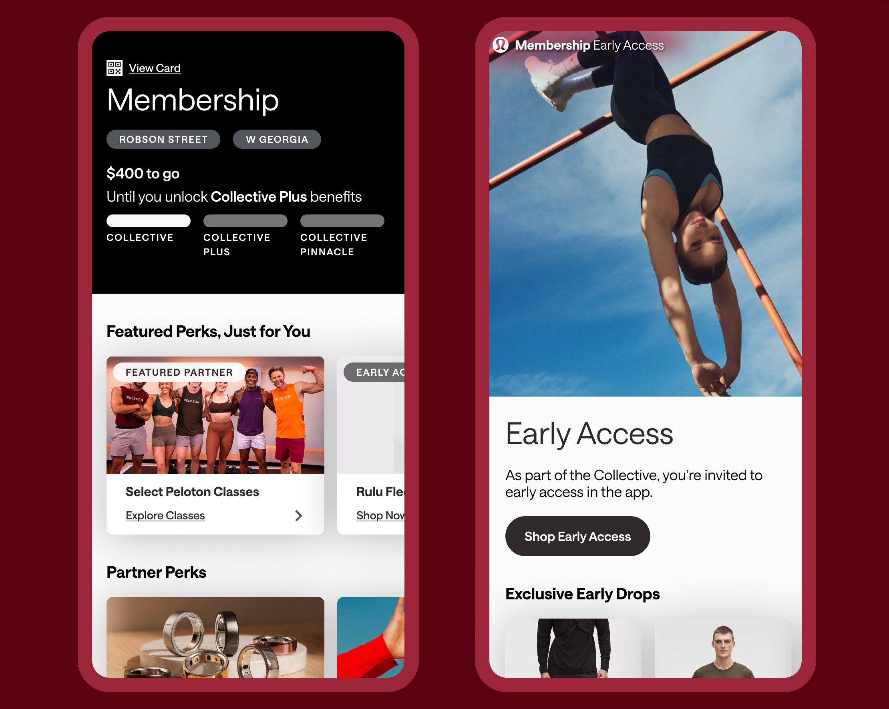

UX Sprint · Heuristic Evaluation · iOS · December 2025
Lululemon
A heuristic evaluation and targeted redesign of the lululemon iOS app — finding where movement content gets lost, and designing a clearer path to it.

A heuristic evaluation and targeted redesign of the lululemon iOS app — finding where movement content gets lost, and designing a clearer path to it.
lululemon has built a genuinely valuable movement ecosystem — online classes, community events, local instructor-led sessions. The app has the content. The problem is that it's hidden behind membership screens, partner-perk pages, and navigation paths that don't reflect how movement-focused users actually think about the app.
New or returning movement users arrive expecting to find classes. Instead they encounter a home screen that doesn't signal movement content exists, cards that look interactive but aren't, and multiple dead ends with no clear next step. The experience creates confusion and erodes exactly the confidence lululemon's community positioning is designed to build.
Design challenge: How might we make it easier for users to find the right classes, products, and content — so they know what to do next and feel confident using the app?
What lululemon has
A rich movement ecosystem — online classes, community events, partner content, local sessions.
What users experience
An interface that hides the movement content behind membership layers users weren't expecting to navigate.
The team evaluated the full flow from home screen to class completion using Nielsen's ten heuristics, rating each finding on a 0–4 severity scale. The evaluation produced seven distinct issues — the four most impactful all clustered around the same root cause: the interface makes promises it doesn't keep, and provides no path forward when it falls short.
| Finding | Heuristic violated | Screen | Severity |
|---|---|---|---|
| Movement classes are invisible from the home screen | #7 Flexibility + Efficiency of Use | Home | Level 3 |
| Home screen doesn't signal that classes exist | #2 Match between system and real world | Home | Level 3 |
| Members-Only Experiences page is a dead end — no next steps | #7 Flexibility + Efficiency of Use | Members | Level 3 |
| Featured Partner card implies a full class range; only yoga is available | #2 Match between system and real world | Members | Level 3 |
| "Good Afternoon" looks like a static header but functions as a button | #4 Consistency and standards | Home | Level 2 |
| Top Benefits cards look interactive but are static | #4 Consistency and standards | Members | Level 2 |
| No "class complete" state — the flow ends without acknowledgement | #2 Match between system and real world | Class player | Level 2 |

Within the team's sprint, I owned the Class Detail page and the Class Completion state — the two screens that sit at the sharpest point of the user's movement journey. One is where the decision to start is made. The other is where the experience closes. Both were failing the user in different ways.
The existing Class Detail page buried the start action below recommended equipment product cards and instructor biography. A user who had already navigated through multiple screens to reach a class was forced to scroll past commercial content to find the "Start Your Class" button. The journey to begin was longer than it needed to be, and the page's hierarchy served commerce over the user's actual goal.
The redesign inverts the priority: instructor context and the start CTA come first, at the top of the screen, with social proof ("120+ learners today") immediately below. Product recommendations move to the post-class state, where they are contextually relevant rather than obstructive.
The existing app had no class completion state at all. After a class ended, users were returned to the class player without acknowledgement that anything had happened. No confirmation. No closure. No next step.
Every movement app users have a reference point for — Peloton, Nike Training Club, Apple Fitness+ — marks completion with a dedicated moment. lululemon's absence of this state violated a basic user expectation and left the experience feeling unfinished. The redesign adds a clean completion screen: "Class Complete · Great job!" with two clear paths forward — back to classes, or watch again.


The team's redesign addressed the three goals that emerged from the prioritization matrix: make classes easy to find, help users choose with confidence, and eliminate dead ends across the movement journey.
The For You screen was restructured so movement content — classes and community events — surfaces immediately alongside personalized product recommendations, rather than sitting behind a separate navigation path. The Connect tab was redesigned to give community events the same visual weight as commercial content. Across every screen, interactive cards were made consistently interactive, and every dead end received a clear redirect path.



A hi-fi redesign across five screens, presented to lululemon in December 2025.
The sprint produced a complete hi-fidelity redesign covering the onboarding flow, For You home, Members, Connect, Class Detail, and Class Completion — with every change mapped directly to a specific heuristic violation and its severity rating. The presentation was delivered to lululemon stakeholders as part of the BrainStation industry sprint programme.
The sharpest finding from the evaluation — that lululemon has excellent content that the interface actively hides — translated into a design strategy with a clear business case: a user who can find and complete a class is more likely to return, engage with the community, and convert on product recommendations than one who never found the class in the first place.
The most useful thing this sprint reinforced is that heuristic violations aren't UI bugs — they're trust failures. Each one is a moment where the interface set an expectation and then broke it. The accumulation of those moments is what turns a user who came to move into a user who's confused and leaves.
Designing the Class Detail and Completion screens specifically taught me something about hierarchy that I now think about in every product context: when a user has made a commitment — navigated to a class, chosen it, decided to start — the interface's job is to get out of the way. Commerce follows accomplishment. It doesn't precede it.